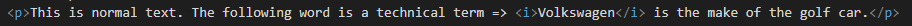

This element defines text that is in an alternate voice or mood. It is usually displayed in italics.
The element is typically used to indicate a technical term, a phrase from another language, another language, a thought, a ship name etc.
This should only be used when there is not a more appropriate semantic element such as:
This is normal text. The following word is a technical term => Volkswagen is the make of the golf car.
This is how its coded:
The global attributes are supported. Global
The event atttributes are suported. Event Attributes